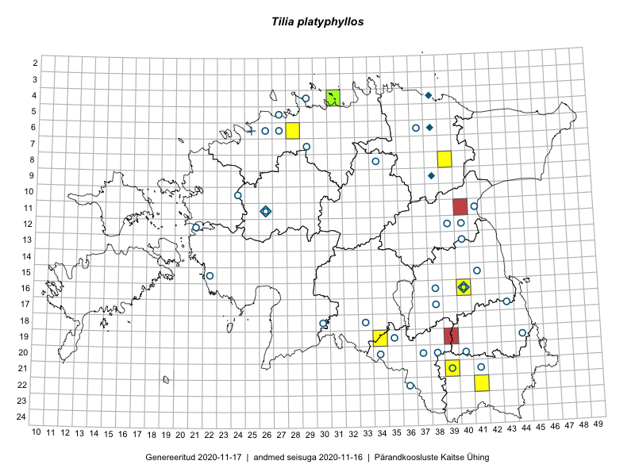

Tilia platyphyllos — suurelehine pärn
Malvaceae :: Tilia platyphyllos Scop. (66)

Kaart põhineb 66 kirjel:
vaatlusi 6
herbaareksemplare 60
Taime kaasaegsed ja ajaloolised leiukohad asuvad 38 ruudus.
Tingmärgid ja ruutude arvud periooditi (U1 / V2 )
█ 2006–2020 (6/–)
◆/◇ 1971–2005 (4/0)
○ 1921–1970 (31/0)
+ kuni 1920 (1/0)
× hävinud (–/0)
? kaheldav (–/0)
| Ruut | Leidja(d) | Leiuaeg | Kirje |
|---|---|---|---|
| 19-34 | Aglis Part, Mare Toom | 2009-06-28–2009-07-03T09:00Z | ruut/ala: Tilia platyphyllos Scop. |
| 16-40 | Elina Osi | 2016-05-27–2016-05-27T09:47Z | ruut/ala: Tilia platyphyllos Scop. |
| 22-41 | Karin Kikas, Elle Rajandu | 2015-05-25 | ruut/ala: Tilia platyphyllos Scop. |
| 08-39 | Karin Kikas, Elle Rajandu | 2015-06-05 | ruut/ala: Tilia platyphyllos Scop. |
| 21-39 | Rein Kalamees, Eerik Leibak | 2016-06-17 | ruut/ala: Tilia platyphyllos Scop. |
| 21-39 | Rein Kalamees, Eerik Leibak | 2016-06-17 | ruut/ala: Tilia platyphyllos Scop. |
| 20-37 | H. Rebassoo | 1957-08-12 | TAA0042600: Tilia platyphyllos Scop. |
| 07-29 | Silvia Talts | 1954-09-08 | TAA0042601: Tilia platyphyllos Scop. |
| 20-38 | Vilma Kuusk, Visolde Puusepp | 1957-08-12 | TAA0042602: Tilia platyphyllos Scop. |
| 20-38 | Vilma Kuusk, Visolde Puusepp | 1957-08-12 | TAA0042603: Tilia platyphyllos Scop. |
| 11-26 | M. Kask | 1964-07-04 | TAA0042604: Tilia platyphyllos Scop. |
| 15-22 | Elsa Varep | 1954-08-09 | TAA0042605: Tilia platyphyllos Scop. |
| 15-22 | Elsa Varep | 1954-08-09 | TAA0042606: Tilia platyphyllos Scop. |
| 15-22 | Elsa Varep | 1954-08-09 | TAA0042607: Tilia platyphyllos Scop. |
| 06-26 | M. Kask | 1960-08-12 | TAA0042608: Tilia platyphyllos Scop. |
| 21-39 | Vilma Kuusk, H. Rebassoo | 1957-08-14 | TAA0042609: Tilia platyphyllos Scop. |
| 22-36 | Viive Kõvask, Ella Tammemägi | 1957-08-20 | TAA0042610: Tilia platyphyllos Scop. |
| 20-34 | M. Kask | 1959-06-07 | TAA0042611: Tilia platyphyllos Scop. |
| 17-43 | Helga Tamm | 1957-06-04 | TAA0042612: Tilia platyphyllos Scop. |
| 21-41 | M. Kask | 1957-06-16 | TAA0042613: Tilia platyphyllos Scop. |
| 06-37 | M. Kask | 1963-06-12 | TAA0042614: Tilia platyphyllos Scop. |
| 20-37 | Visolde Puusepp | 1957-08-12 | TAA0042615: Tilia platyphyllos Scop. |
| 17-38 | Helga Tamm | 1962-06-21 | TAA0042616: Tilia platyphyllos Scop. |
| 12-40 | M. Kask | 1967-06-07 | TAA0042617: Tilia platyphyllos Scop. |
| 12-21 | Linda Viljasoo | 1962-07-11 | TAA0042618: Tilia platyphyllos Scop. |
| 19-44 | Silvia Talts | 1957-07-02 | TAA0042619: Tilia platyphyllos Scop. |
| 19-44 | Silvia Talts | 1957-07-02 | TAA0042620: Tilia platyphyllos Scop. |
| 19-44 | Silvia Talts | 1957-07-02 | TAA0042621: Tilia platyphyllos Scop. |
| 16-40 | M. Kask | 1956-09-18 | TAA0042622: Tilia platyphyllos Scop. |
| 12-39 | M. Kask | 1966-07-25 | TAA0042623: Tilia platyphyllos Scop. |
| 16-40 | Toomas Kukk | 2000-09-03 | TAA0042624: Tilia platyphyllos Scop. |
| 16-40 | Toomas Kukk | 2000-09-03 | TAA0042625: Tilia platyphyllos Scop. |
| 19-35 | J. Maasik | 1959-06-05 | TAA0042626: Tilia platyphyllos Scop. |
| 11-41 | Agnes Ojaveer | 1964-08-08 | TAA0042627: Tilia platyphyllos Scop. |
| 10-24 | Malle Simson, Tiiu Sütt, K. Lang | 1960-07-27 | TAA0042628: Tilia platyphyllos Scop. |
| 04-29 | M. Kask | 1958-06-13 | TAA0042629: Tilia platyphyllos Scop. |
| 13-40 | Linda Viljasoo | 1967-06-07 | TAA0042630: Tilia platyphyllos Scop. |
| 16-38 | Visolde Puusepp, Helga Tamm | 1962-07-05 | TAA0042631: Tilia platyphyllos Scop. |
| 16-38 | Visolde Puusepp, Helga Tamm | 1962-07-05 | TAA0042632: Tilia platyphyllos Scop. |
| 06-27 | A. Üksip | 1960-08-16 | TAA0042633: Tilia platyphyllos Scop. |
| 06-27 | A. Üksip | 1960-08-16 | TAA0042634: Tilia platyphyllos Scop. |
| 06-27 | A. Üksip | 1960-08-16 | TAA0042635: Tilia platyphyllos Scop. |
| 06-27 | A. Üksip | 1960-08-16 | TAA0042636: Tilia platyphyllos Scop. |
| 21-41 | M. Kask | 1957-06-16 | TAA0042637: Tilia platyphyllos Scop. |
| 21-41 | M. Kask | 1957-06-16 | TAA0042638: Tilia platyphyllos Scop. |
| 15-41 | Liivia Laasimer | 1967-06-16 | TAA0042639: Tilia platyphyllos Scop. |
| 15-41 | Liivia Laasimer | 1967-06-16 | TAA0042640: Tilia platyphyllos Scop. |
| 18-33 | M. Kask | 1959-08-13 | TAA0042641: Tilia platyphyllos Scop. |
| 06-26 | Taimi Piin, H. Ting, Ella Tammemägi | 1960-08-03 | TAA0042642: Tilia platyphyllos Scop. |
| 11-26 | M. Kask, Liivia Laasimer, Linda Viljasoo | 1979-06-27 | TAA0042643: Tilia platyphyllos Scop. |
| 11-26 | M. Kask, Liivia Laasimer, Linda Viljasoo | 1979-06-27 | TAA0042644: Tilia platyphyllos Scop. |
| 11-26 | M. Kask, Liivia Laasimer, Linda Viljasoo | 1979-06-27 | TAA0042645: Tilia platyphyllos Scop. |
| 08-34 | M. Kask | 1958-08-20 | TAA0042646: Tilia platyphyllos Scop. |
| 08-34 | M. Kask | 1958-08-20 | TAA0042647: Tilia platyphyllos Scop. |
| 12-39 | Silvia Talts | 1966-07-22 | TAA0042648: Tilia platyphyllos Scop. |
| 05-27 | G. Vilbaste | 1947-04-17 | TAM0027930: Tilia platyphyllos Scop. |
| 16-40 | A. Remmel | 1955-07-15 | TU302769: Tilia platyphyllos Scop. |
| 06-38 | Marie Nelke | 1995 | TU302772: Tilia platyphyllos Scop. |
| 20-40 | L. Pihlapuu | 1961-06-29 | TU302773: Tilia platyphyllos Scop. |
| 20-40 | L. Pihlapuu | 1961-07-03 | TU302774: Tilia platyphyllos Scop. |
| 17-43 | T. Saava | 1957-06–1957-08 | TU302785: Tilia platyphyllos Scop. |
| 18-30 | Ellen Vilbaste | 1965-07-26 | TAA0115468: Tilia platyphyllos Scop. |
| 04-31 | Toomas Kukk, Sander Laherand | 2016-08-31 | TAA0136265: Tilia platyphyllos Scop. |
| 04-31 | Toomas Kukk, Sander Laherand | 2016-08-31 | TAA0136266: Tilia platyphyllos Scop. |
| 06-25 | E. Niclasen | 1910-07-27 | TAM0133969: Tilia platyphyllos Scop. |
| 09-38 | Olev Abner | 1998-08-02 | TALL A010987: Tilia platyphyllos Scop. |
Ruutude arv uue atlase andmekogu järgi. Muuhulgas arvestab vanemat herbaariumi, 2005. aasta atlase välitöölehtedelt uuesti digitaliseeritud andmeid jne. Uue atlase andmekogust pärinevad andmed on kaardile kantud siniste sümbolitega.↩︎
Ruutude arv 2005. aasta atlase (Kukk, T., Kull, T., Eesti taimede levikuatlas. Eesti Maaülikool, Põllumajandus- ja Keskkonnainstituut, Tartu, 2005) järgi. Andmeallikana on kasutatud levik.exe programmi, kus igas ruudus on registreeritud vaid uusim leid. Seetõttu on vanemate perioodide kohta andmed puudulikud. Kasutatud levik.exe andmestikus leidub mõningaid kõrvalekaldeid atlase trükis ilmunud versioonist, sagedamini tarnade ja käpaliste seas. Lisaks leidub selles andmestikus valik liike (peamiselt väheste leidudega tulnuktaimed), mille kaarte trükis ei avaldatud. Vana atlase andmed ruutudest, milles ei ole uue atlase andmekogus leide enne 2006. aastat, on kaardil esitatud punaste sümbolitega. Vana atlase andmetel hävinud ja kaheldavaid leiukohti pole hilisemate (taas)leidude põhjal korrigeeritud.↩︎